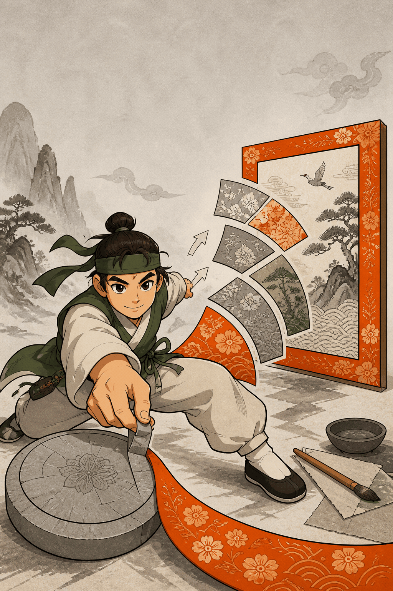

0
×1
🔊
둘레 섬
문양 1
4
8
16
✂️ 펼치기
다음 문양으로 →

🔊
원
펼
침
펼치면 네모가 돼
6학년 2학기 · 원의 둘레와 넓이
최고
0
문양 펴기!
어떻게 놀아요? 〉
1/3
얼마나 엄하게 볼까?
쉬움
첫 실수는 힌트만
어려움
실수하면 바로 −1
다음
화면을 탭해도 넘어가요
문양 복원 끝!
⭐
점수
0
펼친 문양
0
오늘 편 둘레
0 cm
최고 기록
0
다시 펴기 ↻